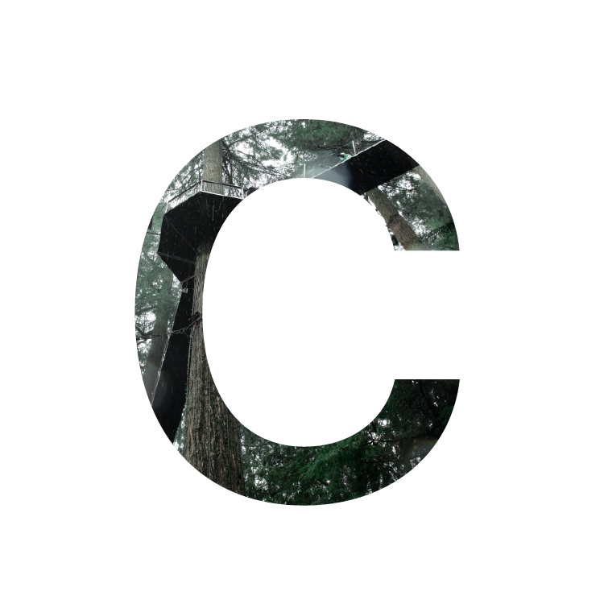
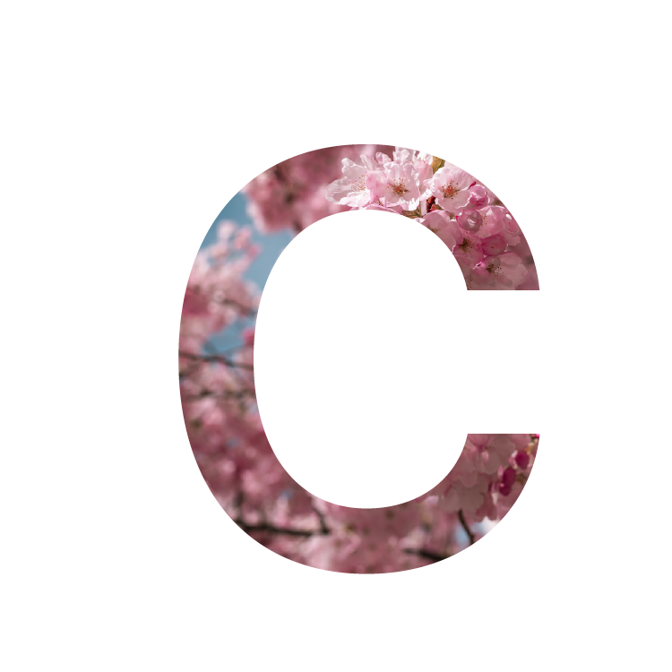

cameron henderson
vancouver, canada
digital marketing
data analytics
blockchain
contact me
instagram > linkedin > blog >


about me
I graduated from the University of British Columbia in May 2020 with a Bachelors in Commerce from the
Sauder school of business. Since then, I've spent time learning Google Analytics, Google Ads, and
taking Harvard CS50 to learn C++, Python, Javascript, SQL as well as some HTML and CSS. That's about
it for accomplishments of note.
I've become quite passionate and curious about solving problems in our evolving world. Specifically problems associated with data analysis, data privacy, and digital marketing. This has led me to explore Digital Marketing as a career path, as well as pursue (upcoming) blockchain/software projects in my spare time. Personally, I love photography, writing, and mixing drinks. Naturally, where I grew up (Vancouver, BC), there were many outdoor activities to choose from. So I enjoy good hikes up the local mountains when I get the chance.
I've included some examples of the aforementioned below. Feel free to explore.
I've become quite passionate and curious about solving problems in our evolving world. Specifically problems associated with data analysis, data privacy, and digital marketing. This has led me to explore Digital Marketing as a career path, as well as pursue (upcoming) blockchain/software projects in my spare time. Personally, I love photography, writing, and mixing drinks. Naturally, where I grew up (Vancouver, BC), there were many outdoor activities to choose from. So I enjoy good hikes up the local mountains when I get the chance.
I've included some examples of the aforementioned below. Feel free to explore.
skills and projects
if you'd like to see my work experience, head over to my

certifications
I completed my Harvard CS50 certification in January 2021. I took this course because I wanted
to develop skills in computer science that would be valuable to have if I was going to pursue
a career in the tech industry. I loved the course, and would recommend it to anyone wanting
to dive into coding as a beginner.

I completed my Google Analytics Individual Qualification in January 2021. I took this course because
I knew that it would be a valuable skill to have for Digital Marketing roles, but I honestly was also
just curious to see how fast I could learn the interface and use it to solve problems.
This certificate actually accounts for two seperate certificates. They are so closely related that I
decided it would be better to include them both under the same heading. They are the Google Search Ads
Certification and the Google Display Ads Certification. I completed both consecutively in January 2021
after realizing the importance of skillfully navigating Google Ads to optimize the performance of
Google Analytics.
projects
During my fourth year at UBC, I was lucky enough to get into a course called New Venture Design,
or NVD for short. This was an 8-month course that paired business students (me) with engineering
students to come together in groups of 6, find a problem in our worlds, and solve it with the creation of a product.
It sounds simple, but we had to go through a long process of finding an idea that had a viable and
potentially profitable market, conduct market research with real stakeholders, and then create a
prototype of our product. Our team chose to tackle the lack of environmental information in marijuana
growing operations (which are legal in Canada). This led to Tangie Systems, an IoT (internet of things)
device that measured multiple variables in a grow op environment. The idea is that this device is
modular and would be bought in bundles, placed strategically in the environment, and then transmit
detailed data and metrics to growers so that they can optimize their yield.
By the time the course finished, we had finished building a prototype and had med with potential board members who were interested in seeing the idea through. Sadly, with many of our group graduating at this time, the project has remained just that, a project. If you're ever interested in finding out more about my role (lead generation, financials, market research & analytics), or in the project itself, shoot me an email.
By the time the course finished, we had finished building a prototype and had med with potential board members who were interested in seeing the idea through. Sadly, with many of our group graduating at this time, the project has remained just that, a project. If you're ever interested in finding out more about my role (lead generation, financials, market research & analytics), or in the project itself, shoot me an email.
Upcoming Project...
stay tuned to my blog where updates on this project will come out first before they do here.
photos
I've been a fan of photography for roughly 7 years now. I'm not a professional by any means
but I have shot portraits for profile photos, buildings for project managers, etc. However,
I much prefer to take photos of things that interest me. I rarely update my instagram, but feel
free to check it out.
blog
I put almost all my writing, whether it's updates on my life, thoughts on books, project updates,
and more on my blog. I would put an RSS feed directly on this page, but I don't know the intricacies
of XML and am not familiar with Javascript yet to make that a thing. Plus, all the websites that do it
for you cost money and I'm not a fan of that. So for now, please use the button below.
alcohol
enjoy responsibly and enjoy because-its-been-a-long-week aren't mutually exclusive
wine
What can I say, I'm grateful that I've been around (not drinking) wine for a considerable
portion of my life. In fact, while in university, I took two courses on the subject. After
which, I have amassed knowledge on wine regions, tasting characteristics, and growing.
The curse of the knowledge being that I look like a snob when ordering food. That is, until I
mispronounce Chianti (every single time). In all realness, I understand the industry well,
and I'm fascinated at how I might apply my technical knowledge to it. Don't
get me wrong, when buying for myself, I'm going for price over quality (mostly because my bank account
won't allow otherwise). Wine is something worth sharing, not a reasion to be a snob.
cocktails
We have the pandemic to thank for this one. Being stuck at home meant I started to experiment, maybe too
much, with cocktail recipies. I'm quite a fan of
How To Drink's Channel, and The Educated Barfly's Channel
on YouTube. Here are two of my favourites at the moment.
cold brew martini
[inspiration] | the cold brew martini is something that,
when I made it for the first time, I had to make 3 more immediately. It uses cold brew concentrate (you can buy this
or make it yourself) instead of espresso and oh my does it just taste amazing. Here's how I make it:
- 1 oz. Cold Brew
- 1 oz. Kahlúa
- 1 splash Grand Marnier/Cointreau
- 1 piece of shaved lemon skin
whiskey sour [option to make New York sour]
[inspiration one,inspiration two] |
This one is one of my favourites to order when going out for drinks with friends. It's sour and sweet and it has whiskey.
I firmly believe in the power of a whiskey cocktail. Either way, here's my basic recipie that plays off the inspiration:
- 2.5 oz. Whiskey [choice of which is personal preference, choose something you like]
- 1 oz. Lemon Juice [squeeze this yourself if possible]
- 1 oz. Simple Syrup
- 1 Egg White
- Angostura Bitters
- 0.5 cups Merlot Wine
If you're making the New York version, you'll be floating a red wine on the drink. Try to use Burbon as your whiskey, I recommend a Merlot or fruit forward red wine as your float. For this recipie, ignore the egg white and angostura bitters. Shake the whiskey, lemon juice, and simple syrup and then strain into a glass with ice. Then carefully pour the red wine down the side of the glass onto the sour. It should remain somewhat seperated. It's a lovely twist on the classic sour and provides something less sour than the original.